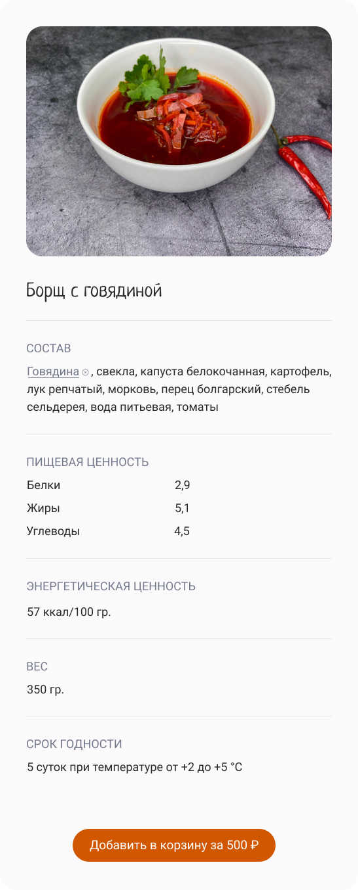

Talenta food
ЗадачиРазработка дизайна сайта
ЗаказчикООО Сантитехнолоджи
Продолжительность6 недель
КомандаИндивидуальный проект
РольUX иследователь, UI/UX дизайнер
ИнструментыFigma, Photoshop, Illustrator

Обзор
Проблема
На сайт лился большой трафик из разных источников и при этом не приносил нужного эффекта, средний чек покупки онлайн был на 65% меньше чем, чек покупки офлайн. Задача была повысить конверсию и средний чек заказа посетителя сайта
Решение
Был проанализирован трафик из рекламных компаний, после чего было выяснено, что 56% трафика приносят не релевантных пользователей не готовых совершать покупки или клиентов для которых нет действует доставка, в связи с чем было принято решение об изменении каналов рекламы для привлечения клиентов
Была внедрена возможность исключать компоненты из состава блюд, чтобы пользователи могли кастомизировать блюдо под себя в зависимости от своих религиозных или иных убеждений, также была разработана стратегия дополнительных блюд которые были рекомендованы посетителям на завершающих шагах оформления заказа
Были проработано юзер флоу, что позволило сократить количество шагов для оформления заказа с шести до трех
Обновленная главная
страница
Обновленная главная страница мобильная версия
Иследования
Цели
1 Проанализировать каналы рекламного трафика
2 Понять причину низкого чека при заказах на сайте
3 Понять причину отказа поситителей от повторного визита
Методы
1 Вторичное исследование
2 Конкурентный анализ
3 Интервью с посетителями кафе
Инсайты
1 Маркетинговая компания не вникла в детали проекта и закупала нерелевалентный трафик из рекламных источников
2 У поситителей не было возможности кастомизировать ингредиенты блюда, особенно это сказывалось в случае диет и религиозных праздников
3 В предыдущей версии сайта было более 6 шагов для оформления заказа и запутанное юзер флоу, пользователи не всегда доходили до оформления заказа
Дизайн
После составления персоны пользователя и проработки нескольких юзер флоу, были приняты решения
1 Редизайн главной страницы сайта, для сокращения шагов при оформлении заказа
2 Применение навигации по категориям блюд в мобильной версии сайта
3 Добавление возможности редактирования ингридиентов блюд
Обновленная главная страница
Обновленная главная страница
Обновленная главная страница

Обновленная главная страница

Вид страницы мобильной версии
Карточка блюда при клике
